Les Bird's Heathkit
Collection
An
original 1st generation Heathkit H8 computer with SVD (Semi-Virtual
Disk) attached. This particular unit was purchased in 1978 as a kit.
The 1st gen H8's came with tin connectors on the motherboard buss. The
H8 is an 8bit computer with an Intel 8080 CPU processor and up to 64KB
of RAM. On top of this H8 is the SVD (on the right) connected to the
computer's floppy cable. Next to the SVD to the left is a new 64K
memory card which I designed in 2008.
Operating System:
HDOS (Heath Disk Operating System) and CP/M.
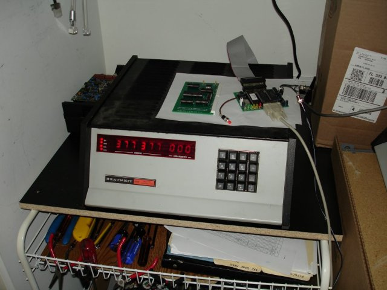
The
inside of my 1st gen H8. It is a non-ORG0 H8 which means that the lower
8K of RAM is reserved for system ROM. This system will run only HDOS
and even with 64K of installed memory you really only have access to
56K. An expansion card was later released that converted the system
into an ORG0 system. That card was called the HA8-8 Extended
Configuration card (see inside photos of the 2nd gen system). In
addition to freeing up the lower 8K of RAM it also added a few other
features such as being able to use double-sided disk drives. The
installed cards from front-to-back: 8080 CPU, WH8-64 - 64K RAM card,
H8-5 Serial/Cassette I/O card, H17 Floppy Disk Controller Board.
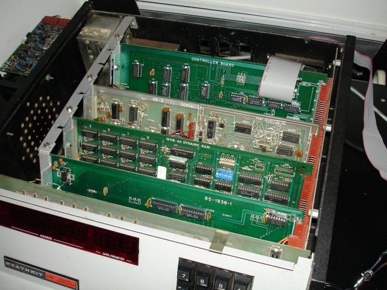
A
2nd generation Heathkit H8 computer with attached H17 floppy disk drive
unit and H19 terminal. The 2nd gen H8's included gold connectors on the
motherboard buss. This H17 configuration has 3 drives which are a 40
track single sided primary drive, 80 track double sided and 40 track
double sided.
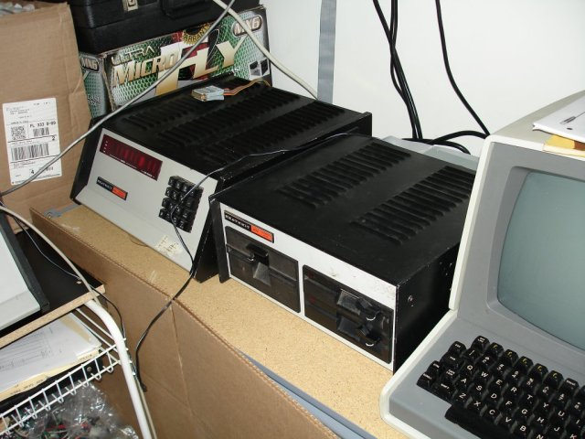
Here's
a photo of the inside of my 2nd gen H8 computer. The small card at the
very back of the computer (behind the controller board) is the HA8-8
Extended Configuration board. In addition this system is using my
custom designed 64K RAM card (the short card towards the front). My 64K
RAM card uses a single 128K memory chip with the high address
line grounded to disable the upper 64K. This system also has the H8-4
Multi Port Serial I/O card which adds 4 RS-232 serial ports. With
the HA8-8 Extended Configuration board it will run HDOS
and CP/M.
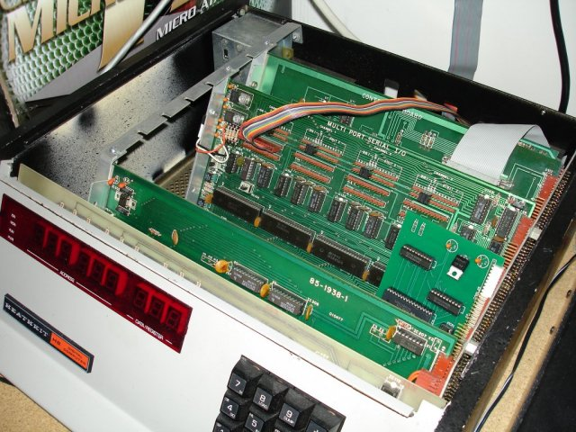
Heathkit
H89 computer with built-in floppy drive attached to H77 dual floppy
drive unit. The H89 is an 8bit computer using a Zilog Z80 CPU processor
and up to 64KB of RAM with a built-in 40 track single sided floppy
drive. The H77 to the left is a dual drive expansion with two 40 track
single sided floppy drives.
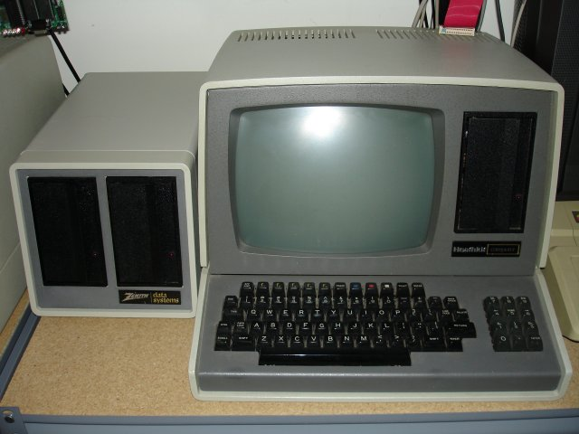
Another
photo of the same computer next to an H77 with two 40 track disk drives
(bottom) and H77 with two Miniscribe hard drives (top). The hard drives
are not attached but they do power up and are quite noisy.
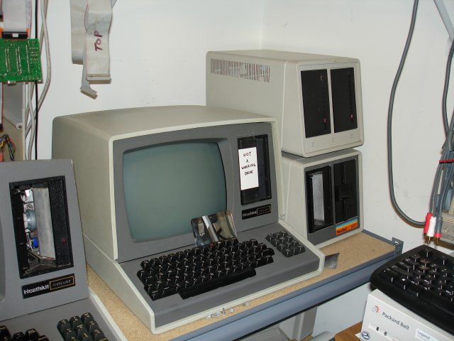
Photos of the inside
of the H77 with Miniscribe hard drives. It's really packed in there.
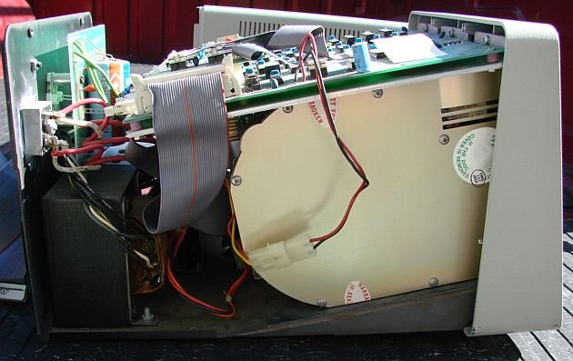
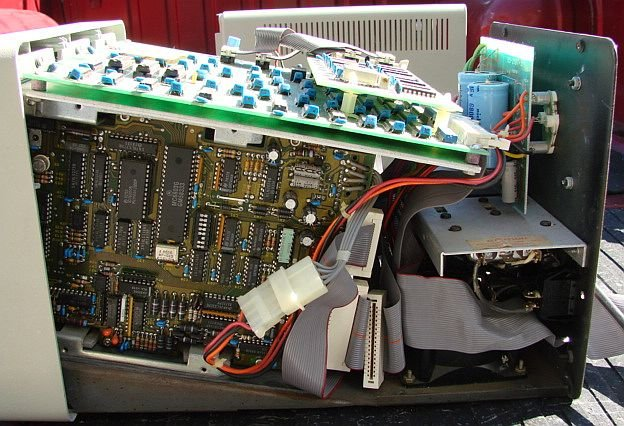
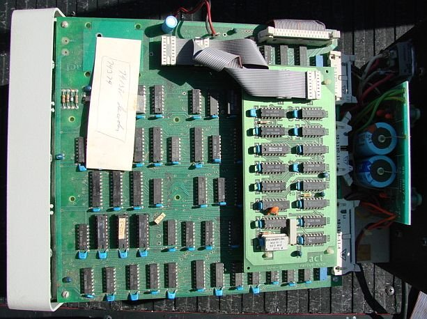
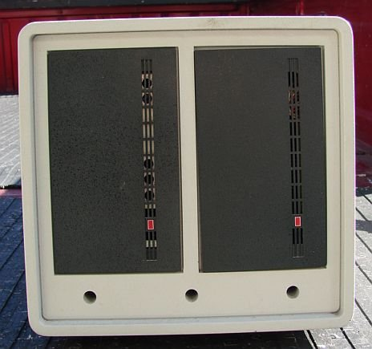
2008
and 2009 acquired Heathkit computers
A
3rd H8 Computer (top of stack) was acquired in an eBay auction
with a winning bid of $547.98. This one was loaded with some really
nice add-on cards. It included the DG Electronics Z80 CPU card (see my
notes further down)
switchable between 2 and 4mhz, the Heathkit H8-37 Double Density soft
sector disk controller card and a custom wirewrapped hard disk
controller (not pictured). In addition I also acquired an H77 dual disk
drive with two 5mb Miniscribe hard drives (see above). This H8 computer
also has
the optional hex front panel keypad and front panel ROM instead of the
octal keypad and ROM from the original.
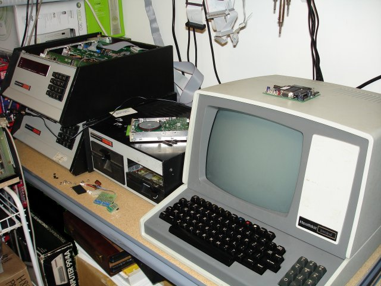
Another
eBay purchase was this Zenith Z90 computer for $150. The Z90 was
identical to the H89 except it included the Z89-37 Double Density soft
sector controller card. This machine also had in it a Magnolia
Microsystems disk controller card, part number 77314, for 8 inch Remex
drives and IMI hard drives.
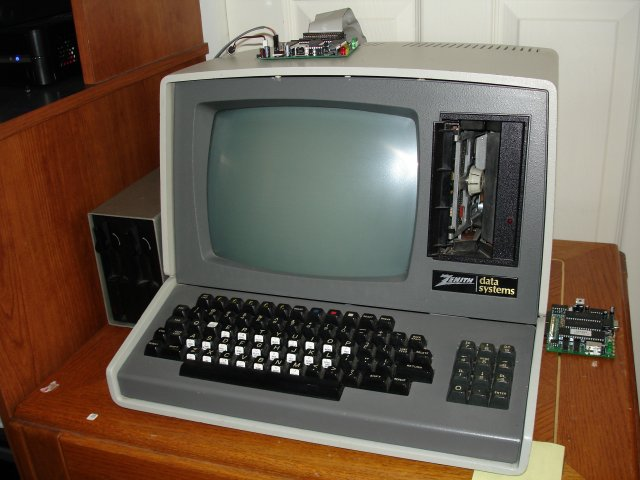
Yet
another eBay purchase was this Heathkit H89 computer for $150. This
system had in it a 50-pin 8inch soft sector disk controller card. Also
it had custom ROM chips for both the CPU board and the terminal logic
board. The custom ROMs allowed communications between the CPU and
terminal board at 19200 baud which was a 2x improvement over the
factory 9600 baud. This particular system required a LOT of cleaning
when it arrived. In this photo I have the CPU board laying on top of
the computer so that I can easily work on it.
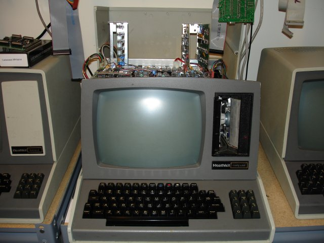
Here's
another H89 I acquired in May of 2009 from a member of the SEBHC for
$200. This system came with a Corvus 6mb hard disk drive in an external
enclosure. See this link for Corvus documentation for the Heathkit computers.
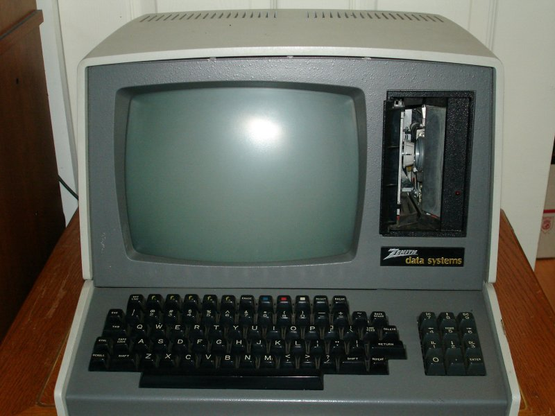
The
6mb Corvus hard drive is pictured here. It attaches to the H89 through
a 34-pin cable connected to a Corvus interface card in the H89.
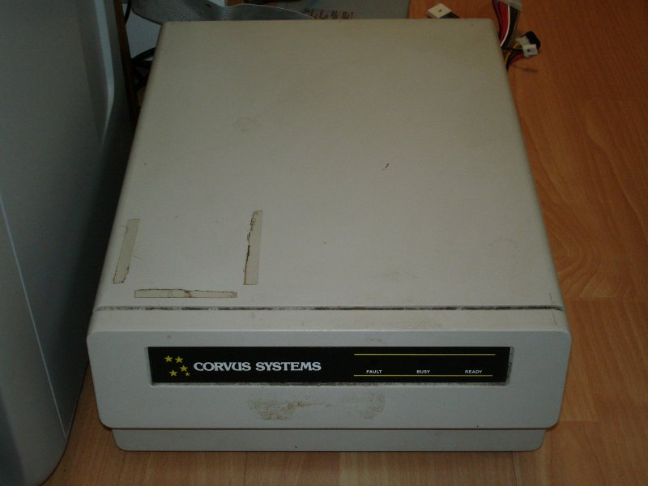
Here's a picture of
the Corvus interface card in the H89.
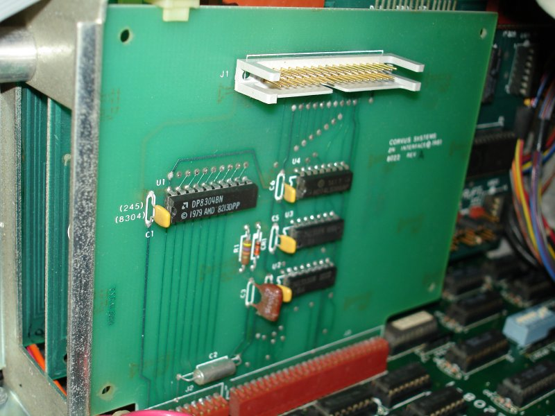
This
photo shows the inside of the Corvus hard drive unit. The hard disk in
this photo is not the one that came with the unit. The original hard
disk was defective. It would not spin up. There were actually a couple
problems with the Corvus hard drive unit. First, the power supply was
not supplying +5V to the controller or the hard drive. I fixed this
by modifying a PC power supply to connect to the controller
card
and to power the hard disk. Second, I later found that the hard disk
had a couple burned out components on the motor control board (possibly
the cause of the power supply failure too).
The hard disk in
this photo is a 20mb Seagate ST-225 that I acquired on eBay.
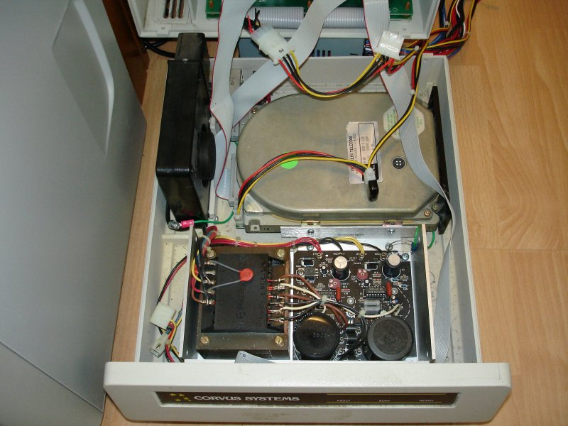
This next photo
shows the original Corvus 6mb hard disk.
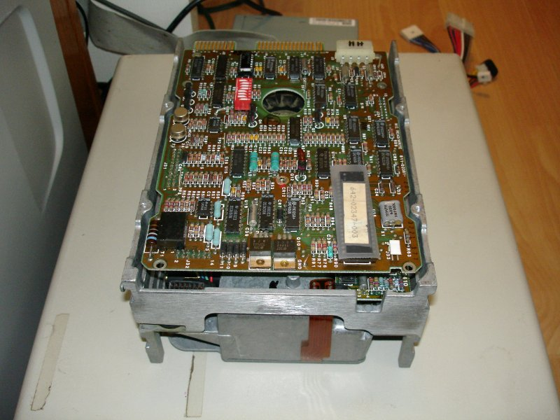
And here's a photo
of the burned out components on the motor control board.
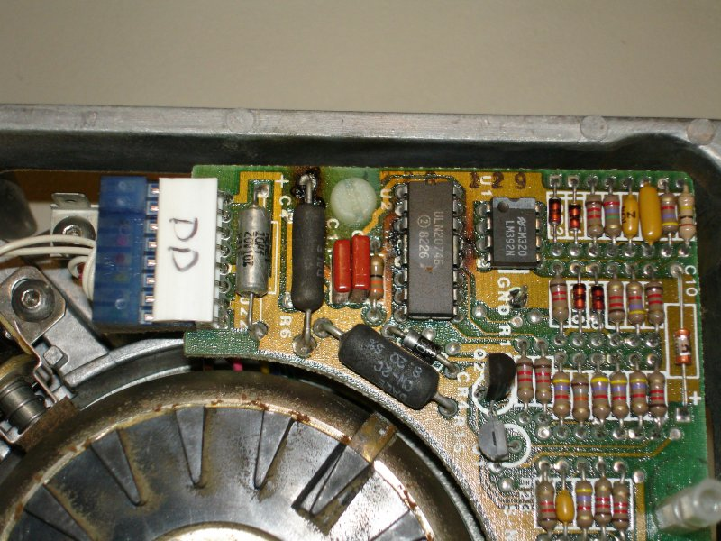
On
Dec 1, 2009 I saw this H-89 listed on eBay for a Buy-It-Now price of
$125. The thing about H-89s is you never know what you'll get. There
were so many add-on cards for it and the eBay listings don't always
show the inside of the system. Fortunately for me my purchase was a
very rare find. When I got the system and opened it up I found inside a
very clean system (just look at the photos) with SigmaSoft's "The
Integrated Graphics Controller" installed. The Integrated Graphics
Controller was an add-on graphics update for the H-89 and H-19 that
added pixel level graphics. The resolution for this graphics
card
was 640 x 250 pixels and 640 x 500 interlaced pixels.
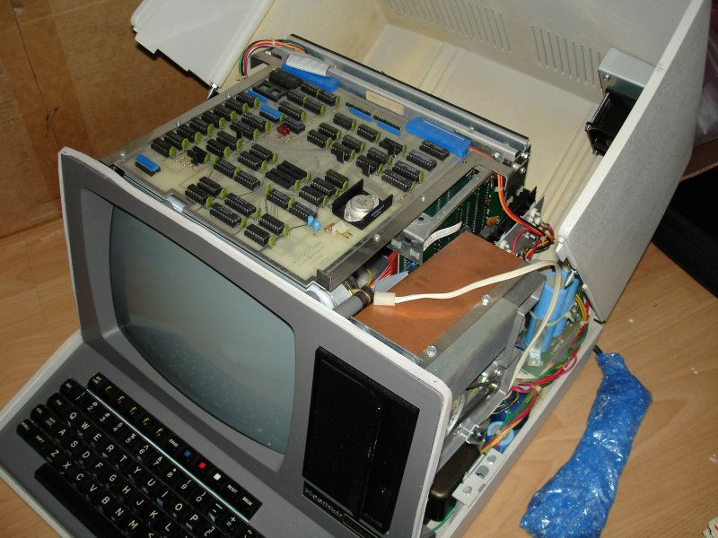
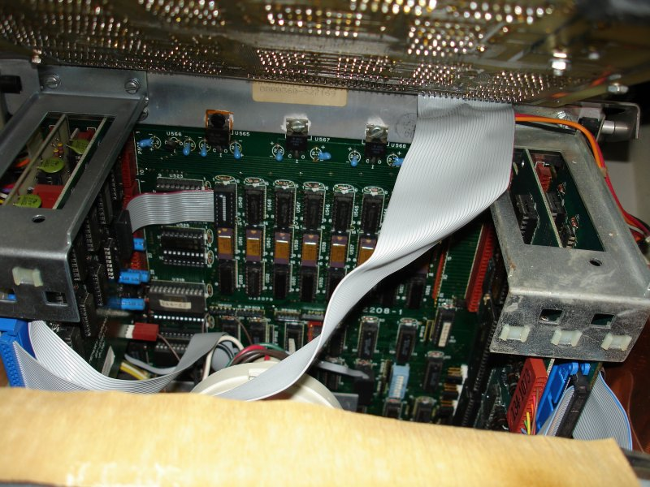
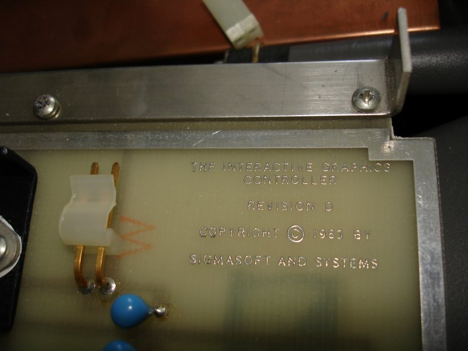
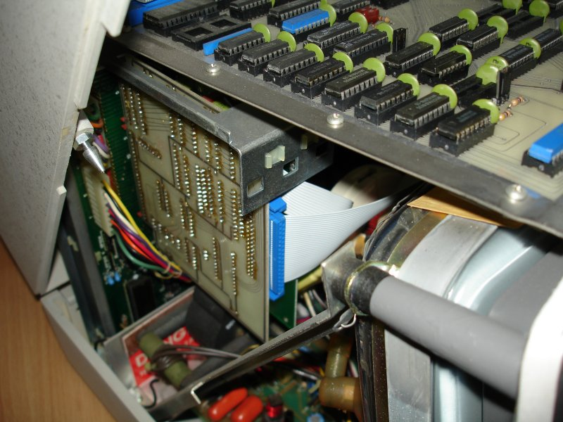
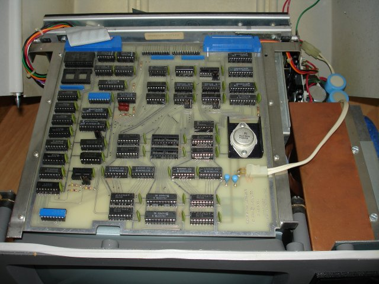
Hardware
Developments: Project H8-2000
When
I brought my H8 down from the attic and dusted it off I was having
difficulty with some of the installed components. Quite understandable
since they
are more than 20 years old. I set out to start learning
about making add-on cards for the H8 and my first creation was
a
new 64K RAM board. The old RAM boards for the H8 used a LOT of 4116
dyanamic RAM chips. My design did away with DRAM and uses SRAM instead.
I believe the main differences are that DRAM requires that the
data be refreshed regularly but SRAM will retain the contents as long
as power is applied. I simplified the design down to a single 128K RAM
chip with the upper 64K disabled. This card is called the H8-64.
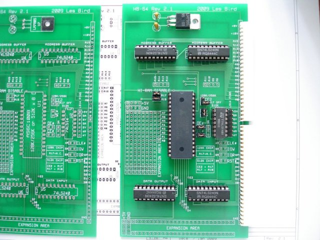
The
next project on my list was to make a new CPU card. I wanted a CPU
card based on the Z80 processor with onboard RAM and configurable clock
rates. I designed the H8-Z80-64 for this purpose. Here are
photos of
the first prototype.
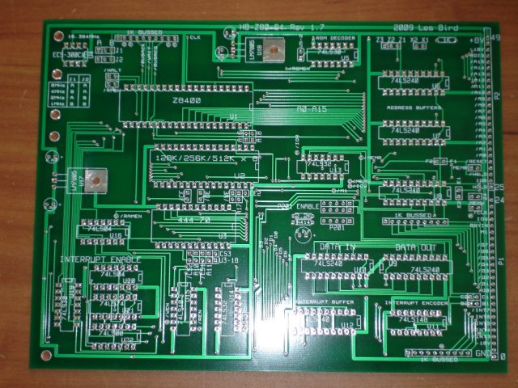
Installed in the
chassis along with my H8-64 memory card.
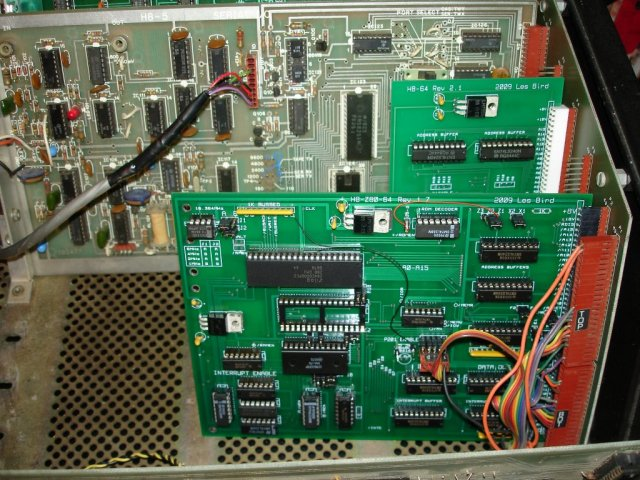
Powered up...
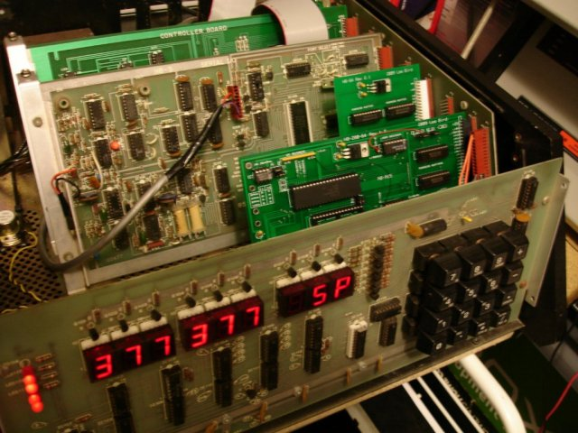
My
next card was a reproduction of the original HA8-8 Extended
Configuration card. This is the small card that was mentioned earlier
that fits in the back of the computer and enables the lower 8K of RAM
so that the full 64K is available for use. Additionally, this card adds
the ability to use double-sided drives. My card, called the H8-8-8, is slightly smaller then
the original and installs facing forward instead of backward like the
original card did.
This photo shows the
original HA8-8 from Heath on the left and my H8-8-8 redesign on the right.
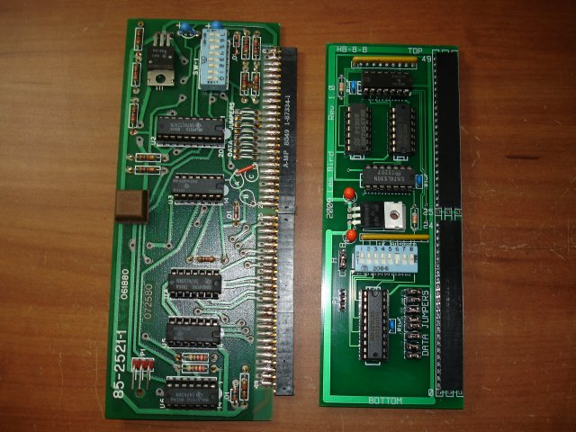
The next card I
designed was a reproduction of the original WH17 hard-sector disk
controller card which I call the H8-17.
It is nearly identical to the original with a few exceptions: (1) It
can be clocked with an onboard oscillator instead of from the system
buss. (2) It can easily be configured for ORG0 and non-ORG0 systems by
an onboard jumper. (3) Drive select line can be switched between H8 bus
pin 18 or pin 24 to coincide with the configuration of the Extended
Configuration card. (4) It uses a single 8K x 8 RAM chip instead of two
2114 1K x 4 chips.
Pictured here is the
H8-17
prototype. The prototype cards had 4 LEDs on the left for diagnostics.
The final card has 7 diagnostic LEDs for monitoring drive access,
motor-on and write-gate.
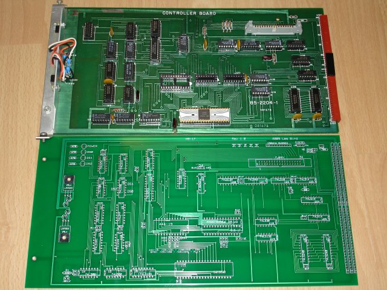
Here's the H8-17 assembled and installed in
the chassis.
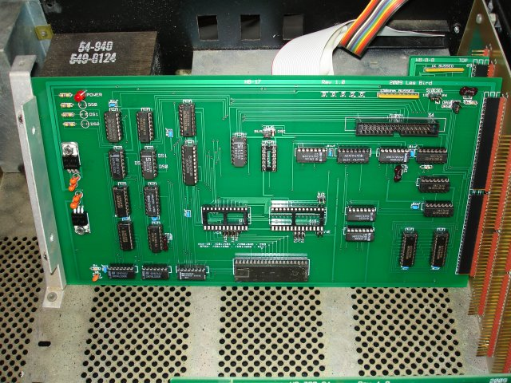
Next is a new H8-4 Multi
Serial Port card. My design does not
include the 20ma circuitry that the original card had. The 20ma
circuitry was mainly for use with Teletype terminals but is
not
needed for CRT terminals. It was also the cause of failures on 2 of my
original H8-4 cards from Heath. Pictured here is my redesigned card
which supports both 8250 and 16550 UARTs. It also uses a single
1.8432MHz oscillator instead of the crystal resistor/capacitor setup
that the original card had.
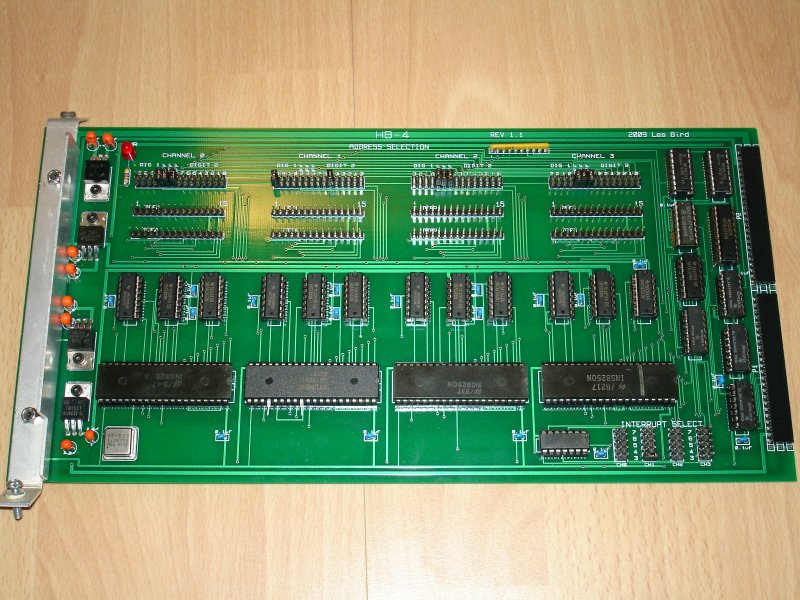
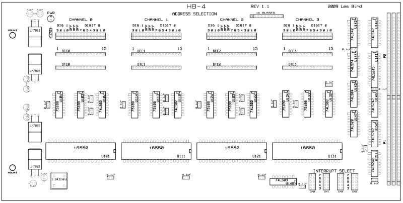
Here's
a photo of one of my Heathkit H8 computers fully populated with my
add-on cards. Note that there is no memory card in this photo. The 64K
of RAM is installed on the Z80 CPU card (see my H8-Z80-64 above). The
cards from front to back: (1) H8-Z80-64 Z80 CPU card with onboard RAM,
(2) redesigned H8-4 Multi Serial Port card, (3) redesigned H8-17 disk
controller card for hard sectored floppies, (4) redesigned H8-8-8
Extended Configuration card.
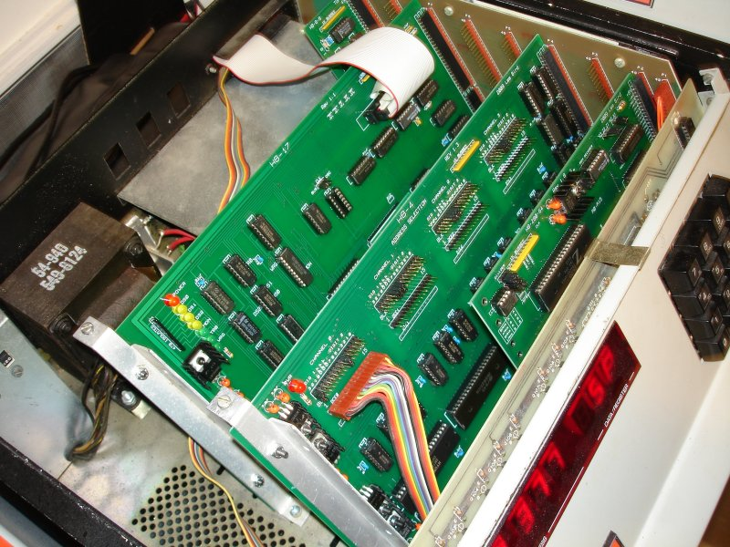
My goal is to revamp
the H8 with all new
hardware thereby increasing the reliability and life of the
system and maintaining complete software compatibility. The
H8 and H89 are still great CP/M machines and the
H8 is easily
expandable and the system is well documented.
The Heathkit
computer collection in a row. Closest to farthest: H89, H89 opened,
H19, H17, and three H8s.
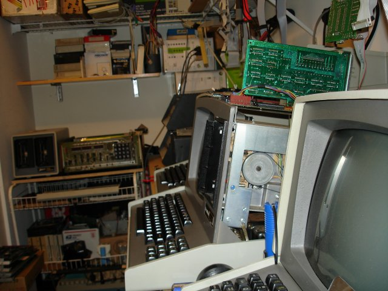
DG
Electronics DG-80 Z80 CPU Card and the Heathkit H37 Controller
In
my spare time I've been playing around with my DG-80 Z80 CPU card for
my H8 computer. My goal was to try to configure it for use with my H37
Double Density controller card. This meant I needed 2 Heathkit ROMs on
the card, Heathkit part# 444-140 and part# 444-70.
The card
originally came with 2 ROMs installed which were the DG-FP8 Rev 1.4 DG
Electronics Front Panel ROM and Heathkit part # 444-19 which was the
H17 ROM. This setup allowed me to boot to a hard sector disk from my
H17 controller and it also allowed me to access my H37 Double Density
controller using the HDOS Operating System. However, it did not work
when using the CP/M Operating System so I could not access my H37 with
that O/S. I had to figure out how to get the Z80 CPU card to
work
with the Heathkit ROMs which should work in both the HDOS and CP/M
operating systems.
Here's a photo of
the CPU card setup to work with the 2 Heathkit ROMs and the H37
controller:
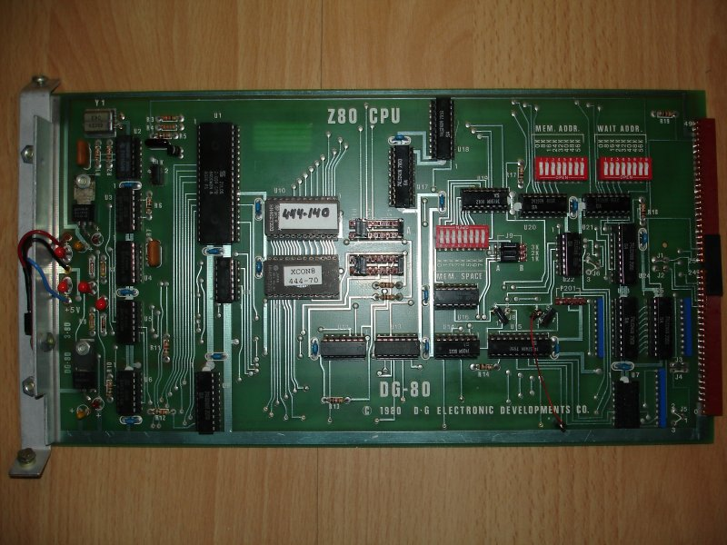
Here's a photo of
the MEM SPACE dip switch configuration:
The
2 ROMs I'm using are burned onto 2732s which are 4K each. I configure
the jumpers for each ROM so that pin 18 is CS, pin 19 is A10 and pin 21
is A11. Turn on all the MEM SPACE switches. Switches 5, 6, 7 and 8 are
for the ROM A chip-select and switches 1, 2, 3 and 4 are for the ROM B
chip-select. This setup means that memory addresses 0 - 3K will select
A and 4K - 7K will select chip B. Also note the A/B jumpers to the
right. I have 1K, 2K and 3K assigned to ROM A (444-140).
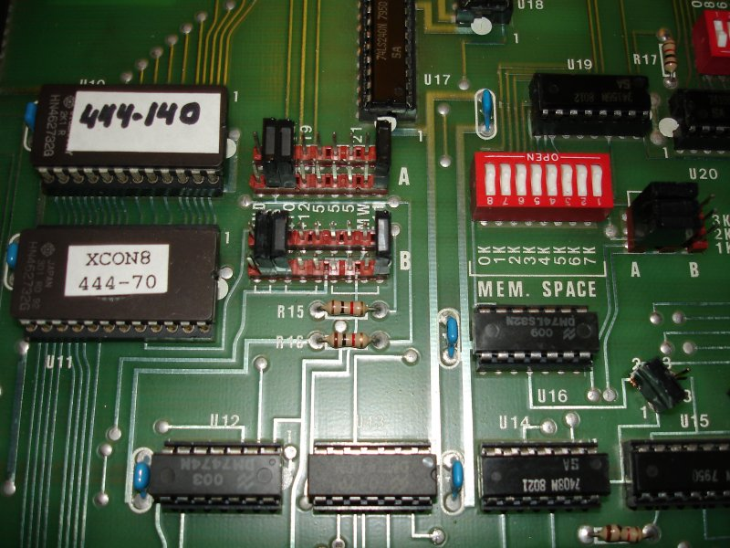
And
a photo of the A/B jumper block and MEM ADDR switch settings. For MEM
ADDR just turn on 0K (switch 1) which reserves 0K through 8K for the
CPU board ROMs.
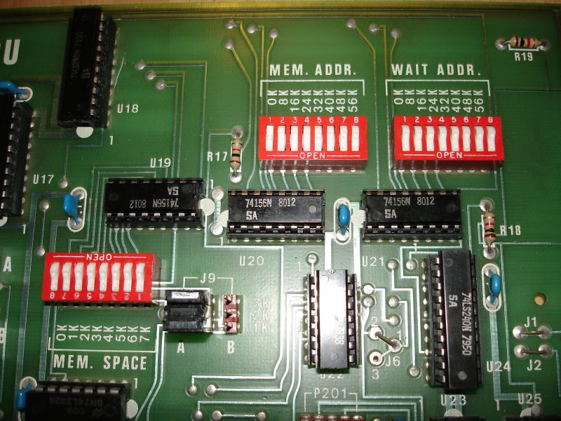
Finally, jumpers J7
and J8 configured for use with the H37 controller card:
For a system without
the H37 you would set J8 to 1 and 3 and J7 to 1 and 2 and the jumper
wire from J7-2 is not needed.
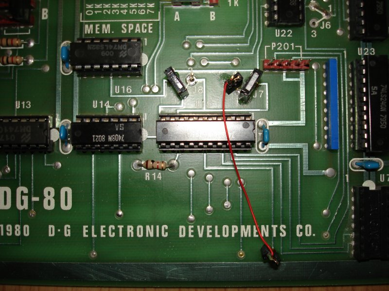
The
end.
SEBHC.ORG Home
Page
April 10, 2013
e-mail